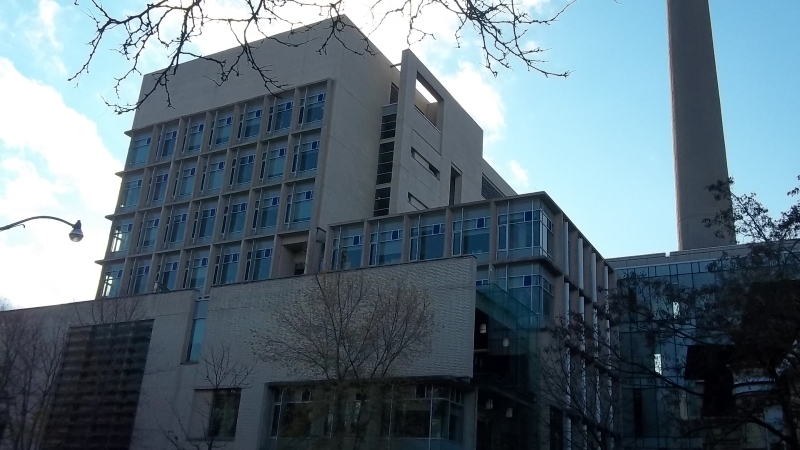

Hello, I am currently a Student Research Trainee at TAGLab at University of Toronto. My current works involving tesing and develping mobile apps for senior. The lab is supervised by Prof. Ronald Baecker. I will be doing my Master's degree at University of Calgary from September of 2015.
My area of specialty in computer science is Human-Computer Interaction. However, I also have background in computational linguistics and machine learning.
Student Research Trainee, TAGLab (University of Toronto)
From: September 2014 - September 2015Location: Toronto, Canada
I started working in this lab as my 4th year computer science capstone. However, my involvement eventually evolved into a part-time position for software evaluation. Now, I am working full-time as a summer intern as a developer/tester.
Information Technology Intern, Jet Asia Airways
From: June 2014 - August 2014Location: Bangkok, Thailand
I worked mainly as an administrator fo the airlines. At the same time, I was also working on setting up Office 365 and migrating employees' emails to the new platform.
Teaching Assistant, University of Toronto
From: September 2013 - December 2013Location: Toronto, Canada
I aided the profs in answering students' questions. Additionally, I also invigilated the midterm examination, marked the last assignment and the final exam.
Master of Science in Computer Science, University of Calgary
From: September 2015Supervisor: Prof. Wesley Willett
The program will start in September 2015.
Bachlor of Science in Computer Science, Cognitive Science and French, University of Toronto
From: September 2011 - May 2015My bachelor is a widely interdisciplinary program. In the end, I have done a specialist in computer science, a major in cognitive science and a minor in French. During my career at University of Toronto, I have been under the supervision of Prof. John Vervaeke, Velian Pandeliev and Prof. Ronald Baecker.
InTouch
From: January 2015 - September 2015Website: Under construction
InTouch is an iOS app designed for seniors and people in their circles of care. It allows seniors to communicate with people in their circles. What makes this app special is that it has been designed with user-centric design philosophy. This means the app has been tested out with seniors themselves. Currently, my role is to be a developer. However, I started as a tester.
ALLT
From: June 2015 - September 2015Website: Under construction
ALLT or Accessible Large-print Listening and Talking is an Android app that features various tools to facilitate eBooks reading. One of its important features is the ability to make recording out from the reading. During the recording, the users can be facilitate through word or sentence highlighting. However, it is not known which parameters for highlighting is the best. Therefore, several parameters are going to be tested. My job is to stabilize and upgrade a modified version of the app for experimentation.
Tangra
From: September 2014 - June 2015Website: Under construction
Tangra is Velian Pendeliev's Master's degree thesis. It is a Django web portal that allows researchers to perform social experiments outside the lab. My task is to upgrade the engine so that it can be later adapted into studies done in TAGLab.
Other Projects
In my spare time, I also work on smaller projects. They are available on Github.